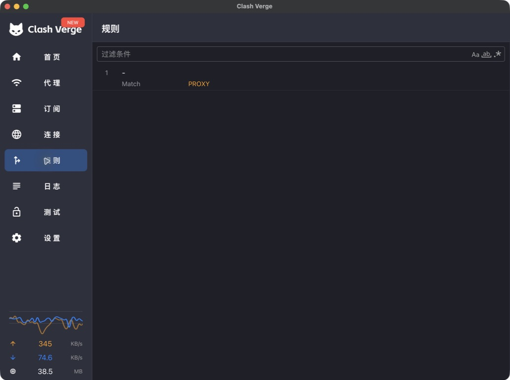

Clash Verge：从看懂代理到排查连接
这是一份给第一次使用 Clash Verge 的读者的现场图解。你会先弄懂四个页面怎样配合，再学会判断“流量准备怎样走”“实际怎样走”以及“出了问题该看哪里”。
本次观察范围 Clash Verge 2.4.7（macOS）
观察时间：2026-09-06 14:04（Asia/Shanghai）
已查看：代理、连接、规则、日志、测试；只做页面导航和信息查看，没有切换节点、修改配置、清除日志或启动测试。
先保护当前网络：代理模式和节点选择可能改变真实网络流量；订阅、配置和测试也可能产生持久变化或外部请求。本教程解释这些入口，但不会替你执行高影响操作。
整套软件可以用一句话记住：代理页是“计划”，连接页是“结果”，规则页是“分流理由”，日志页是“按时间排列的线索”。遇到问题时，沿着这条顺序查，比盲目切换节点更容易找到原因。
先建立模型：四个页面各自回答什么
把 Clash Verge 想成一个交通调度台。模式决定调度规则，代理组决定把一类请求交给哪条路线，连接显示已经上路的车，日志记录每辆车什么时候被怎样分流。规则页把“为什么走这条路”讲得更具体。
你想换处理方式
去“代理”页看规则、全局、直连或链式代理。它改变的是之后的处理方式，属于配置动作。
你想确认是否真的连上
去“连接”页看有没有对应连接、经过什么链路、命中了什么规则。
你想知道为什么这样分流
去“规则”页看可见规则条目，再用日志按时间追查一次处理记录。
你想缩小故障范围
先暂停日志滚动或过滤连接，再比较页面之间是否描述同一条链路。
现场事实：左侧导航包含首页、代理、订阅、连接、规则、日志、测试和设置；底部显示上传速度、下载速度和内核占用。页面之间的因果关系是根据这些现场入口和字段整理出的工作模型。
代理页：先看“准备怎样走”
什么时候来这里：你刚打开软件，想知道当前采用哪种分流方式，或者准备在确认风险后调整代理模式。先看模式，再看代理组；不要把某个节点卡片的存在误认为网络已经成功。
点击截图编号，先读懂控件的作用，再决定是否需要操作。
第一步：看模式如果你想知道“所有请求是否都按同一方式处理”，先看全局、直连等入口；如果你想让不同目标按规则分流，先看规则是否选中。
第二步：看代理组确认当前组的名称和选择状态。节点名称、协议标签和数量是界面信息；真正的连通结果要去连接页和日志页核对。
第三步：知道什么时候停如果下一步会切换模式、节点或系统代理，先停下来确认影响；教程只解释选择，不替你改变网络。
连接页：再看“实际怎样走”
什么时候来这里：你想确认某个网页或 App 是否产生连接，或者想知道连接经过了哪条链路。连接页的表格不是配置表，而是运行中的观察窗口。
点击截图编号，理解每个字段怎样帮助你缩小问题。
先问“有没有”目标没有出现在活跃列表里，可能是请求尚未产生、连接已经关闭或过滤条件太窄；先调整观察范围，不要马上改配置。
再问“经过哪里”查看链路和规则字段，把它们与代理页的当前组对应起来。连接表能证明现场出现了这条记录，不能单独证明所有后续请求都成功。
最后问“是谁产生的”进程、时间和主机字段帮助你把一条连接和具体 App 或网页对应起来；敏感地址不应写进长期教程。
规则页：解释“为什么这样分流”
规则页适合在你已经看到一条连接之后使用。你要找的不是一串孤立的规则名称，而是“这条流量满足了什么条件，于是被交给了哪种处理”。现场页面提供过滤条件，并显示可见的规则条目和 PROXY 结果。

读规则时先看哪三件事？
先看匹配条件，再看处理结果，最后回到连接页确认是否出现了相应链路。不要只看到“PROXY”就推断所有目标都会使用同一条路径；规则通常需要结合目标、顺序和当前模式解释。
为什么规则页不能单独解决故障？
它解释的是分流决定。网络是否连通、连接是否持续、服务是否返回内容，还需要连接页和应用本身的结果共同判断。
观察事实：现场看到过滤条件、规则条目和 PROXY 处理结果。规则优先级和完整配置没有在本次只读范围内逐条验证，因此相关解释保持为界面层结论。
日志页：把问题放回时间线上
日志不是“成功/失败”按钮，而是一条时间线。遇到问题时，先暂停滚动，再用级别或文字过滤缩小范围，然后把日志中的目标、处理路径和规则命中与连接页对上。

点击截图编号，理解“暂停—过滤—对照”的排查顺序。
先暂停日志持续滚动时，最新一行会把你要看的记录推走。暂停只影响阅读，不代表网络状态发生了改变。
再过滤先用 INFO、WARN 或 ERROR 缩小级别，再用目标文本过滤。过滤改变的是你看到的记录范围，不是代理配置。
最后对照把日志时间和目标与连接页对应。某一条 INFO 记录只能证明它被记录下来，不能单独证明请求最终成功。
一条可复用的排查流程
下面这条流程适合“某个网页或 App 似乎没有正常联网”的初次排查。它先收集证据，再考虑是否需要改变配置。
1 · 记录起点记下当前模式、代理组、目标 App 或网页，以及你看到问题的时间。不要先切换节点，否则前后状态无法比较。
2 · 看连接去连接页过滤目标，确认是否有活跃或已关闭连接。没有连接时，问题可能还没走到代理层。
3 · 看链路和规则有连接就看它经过的链路和命中的规则，再回到代理页确认这是否符合当前模式。
4 · 看日志暂停日志、按目标过滤，再把时间和连接字段对照。此时你是在寻找线索，不是在清除历史。
5 · 决定是否改变设置只有证据指向模式、节点或订阅问题时，才考虑下一步配置动作；这一步可能影响网络，必须单独确认。
如果仍然不确定：保留当前状态和观察证据，明确写下“看到了什么、还缺什么”。不要用“换个节点试试”代替根因判断。
Chrome 回归：同一方法如何处理网页
为了确认这份方法不依赖桌面 App，第二条回归使用公开的 Wikipedia 首页。网页可以同时提供视觉截图和 DOM/ARIA 结构，因此定位会比纯像素的桌面界面更稳定。

网页分支仍然先解释页面能帮助用户取得什么结果，再说明控件。
两类界面的共同点是先建立用户任务和页面模型；差别在证据来源：桌面 App 可能主要依赖窗口、Accessibility 和截图，网页还可以用 DOM、ARIA 和 CDP 验证结构。
证据与限制
本教程图片位于同目录 assets/。连接和日志明细已遮盖。教程中的数值、节点名、连接数和状态只代表本次观察；它们会随配置、时间、网络和流量变化。规则的完整优先级、节点实际连通性和测试结果未在本次只读观察中验证。